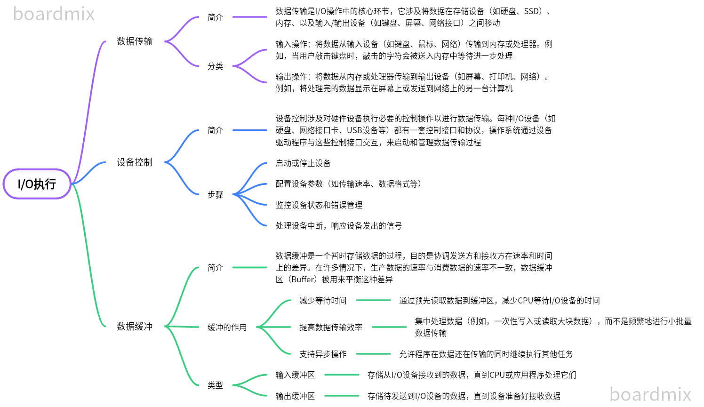
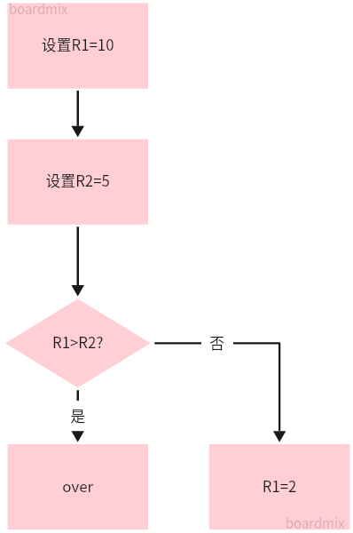
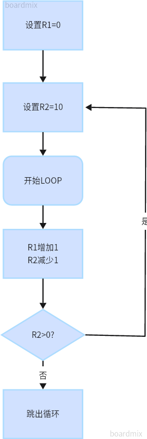
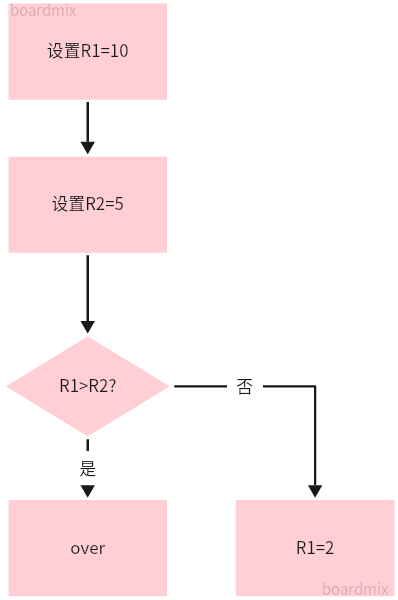
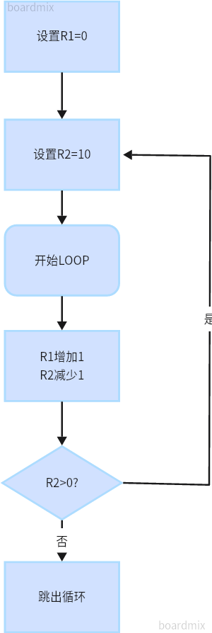

二进制原理
1.介绍
二进制
二进制是计算机科学中最基本的数据表示方式，使用两个符号0和1来表示所有的数据和指令。计算机的硬件电路有两种状态：通电和断电，这非常适合用二进制来表示，因此计算机内部所有的处理和存储都是以二进制形式进行的。
整数（补码）
在计算机中，整数可以是正数、负数或零。为了在二进制系统中表示负数，通常使用一种称为“补码”的形式。补码的主要优点是它允许加法和减法使用相同的硬件电路，并且可以将减法运算转换为加法运算。补码的计算方法是：对于一个数，首先求其二进制表示的反码（即0变1，1变0），然后加1。
浮点数原理
浮点数用于表示实数，可以表示非常大或非常小的数值。它们在计算机中的表示分为三个部分：符号位（表示正负）、指数位（表示范围）、尾数位（表示精度）。浮点数的表示允许在给定的位数内尽可能准确地表示各种大小的数值，但可能会引入舍入误差。
指令集设计原理
指令集是一组预定义的操作，计算机的CPU可以直接理解和执行这些操作。指令集的设计影响着计算机的性能、效率、能耗和编程复杂度。常见的指令集架构包括CISC（复杂指令集计算机）和RISC（精简指令集计算机）。CISC设计理念是通过硬件直接实现复杂的指令来减少指令的数量和程序的长度，而RISC设计理念是简化指令集，通过软件来实现复杂的操作，以提高CPU的执行速度。
2.演示
(1)整数原理
{{intStepDescription}}
(2)浮点数原理
{{floatStepDescription}}
(3)指令集设计原理
请选择一种指令集架构：
你选择了{{ selectedArchitecture }}。现在，请选择一项操作来了解它是如何执行的：
你选择了{{ selectedOperation }}操作。这是{{ selectedArchitecture }}架构下的操作步骤：
- {{ step }}
寻址的展示：
| {{ address }} |
指令集对应关系
| 指令名 | 格式 | 操作码 (Opcode) | 功能码 (Funct) |
|---|---|---|---|
| {{ instruction.name }} | {{ instruction.format }} | {{ instruction.opcode }} | {{ instruction.funct || 'N/A' }} |
以内存为中心的程序员视角的计算机模型
Main Memory
| {{ formatAddress(n, m) }} |
Registers
1.计算机加电开机的过程
2.计算机内存编指和分段
(1)计算机内存分段
| {{ segment.name }} |
(2)地址与内存段
内存操作演示
内存状态
3.处理器计算和I/O的过程
虚拟处理器模拟器
状态变化
寄存器
- {{ name }}: {{ value }}
ALU
最后操作结果: {{ aluResult }}
示例代码
{{ instruction.name }}
处理器工作流程
PART 1 I/O请求发起
PART 2 I/O调度
决定哪些I/O请求先执行，哪些后执行
决定哪些I/O请求先执行，哪些后执行
PART 3 I/O执行
PART 4 中断和直接内存访问（DMA）
直接内存访问（DMA）
直接内存访问是一种允许外部设备直接与内存进行数据交换的技术，而无需CPU介入，可以显著提高数据传输效率。
PART 5 I/O完成
基于“JUMP”的代码基本流程
输入代码并执行
示例代码
{{ example.name }}
{{ example.code }}
寄存器状态
{{ key }}: {{ value }}
 



从高级语言到二进制代码的编译过程
具有运行时环境的代码运行过程
代码输入
编写源代码
{{ simulatedOutput }}
Java字节码
{{ bytecodeOutput }}
类加载模拟
{{ classLoaderOutput }}
链接过程
验证 -> 准备 -> 解析
静态变量分配内存（模拟）:
| 变量名 | 类型 | 值 |
|---|---|---|
| 示例变量 | int | 0 |
此段代码无静态变量
JVM开始执行main方法的字节码...
- 解释执行: 逐条将字节码指令转换为机器码
- 即时编译(JIT): 将字节码的热点部分编译为机器码以提高效率
执行结果：
{{ executionOutput }}
机器码（模拟）
{{ machineCodeOutput }}
请求JVM进行内存管理（分配对象内存、垃圾回收等）、处理异常、执行输入/输出操作等。
- 为
String对象'Hello, World!'分配内存。 - 执行结束后，回收不再使用的对象内存。
- 所有运行时异常都被JVM捕获，若有必要，将调用相应的异常处理程序。
- 执行
System.out.println方法，将字符串'Hello, World!'输出到控制台。
调用System.exit方法JVM终止运行。